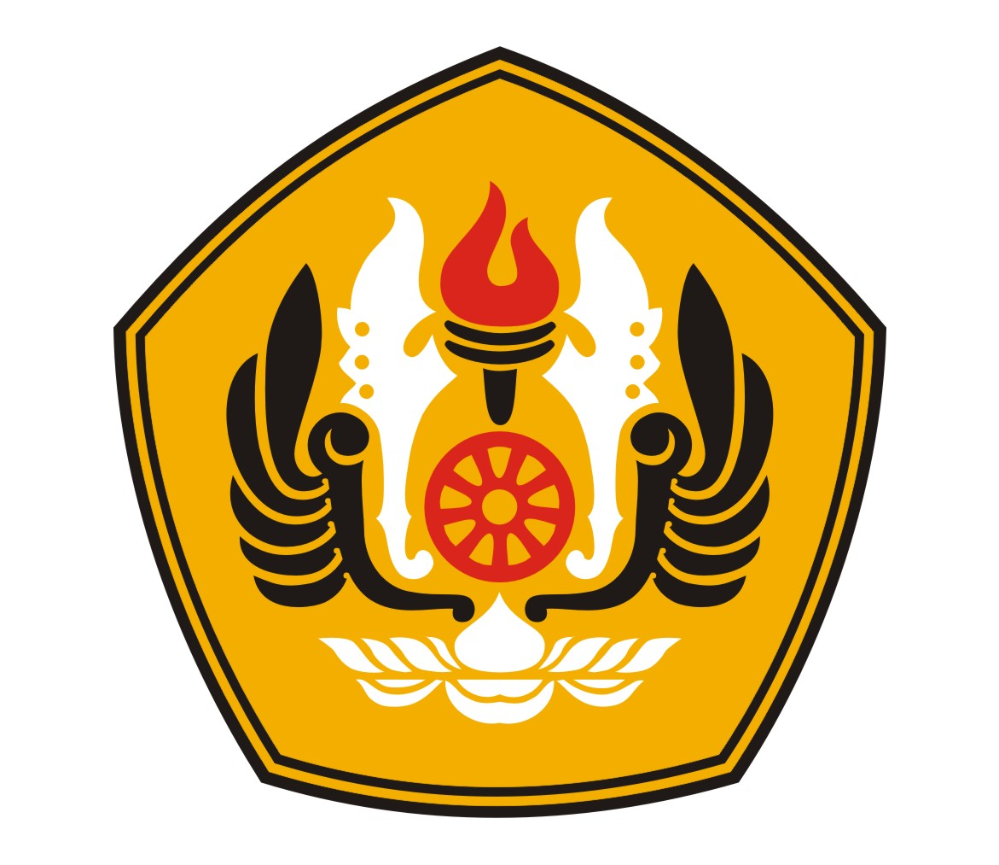

Sejak 20 Oktober 2014, status universitas berubah menjadi Perguruan Tinggi Negeri Badan Hukum (PTN BH) dari sebelumnya berstatus Badan Layanan Umum (BLU). Peresmian itu ditandai dengan peraturan pemerintah (PP) yang ditandatangani Presiden Susilo Bambang Yudhoyono. Penetapan itu didasarkan atas evaluasi kinerja yang dilakukan tim independen yang dibentuk oleh Kementerian Pendidikan dan Kebudayaan (Kemendikbud).Berdasarkan Keputusan Badan Akreditasi Nasional Perguruan Tinggi (BAN PT) tertanggal 16 Januari 2014, Unpad mendapat peringkat A (sangat baik).
Sebuah lembaga kemahasiswaan yang berperan aktif dalam menunjang seluruh kebutuhan mahasiswa Program Studi Bisnis Digital Unpad. Dalam menjalankan kepengurusan saat ini, Himagi Unpad menganut asas dinamis dan Agile agar seluruh komponen dan sumber daya Himagi Unpad dapat dengan mudah beradaptasi dengan permasalahan – permasalahan yang sedang terjadi layaknya sebuah perusahaan Startup.
Himpunan Mahasiswa Bisnis Digital adalah organisasi internal FEB Unpad yang bertujuan dan berfungsi untuk mewadahi aspirasi mahasiswa Bisnis Digital di bidang akademik dan keprofesian.